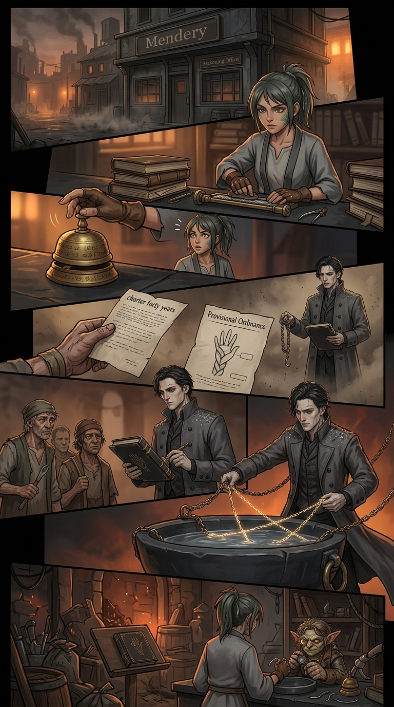
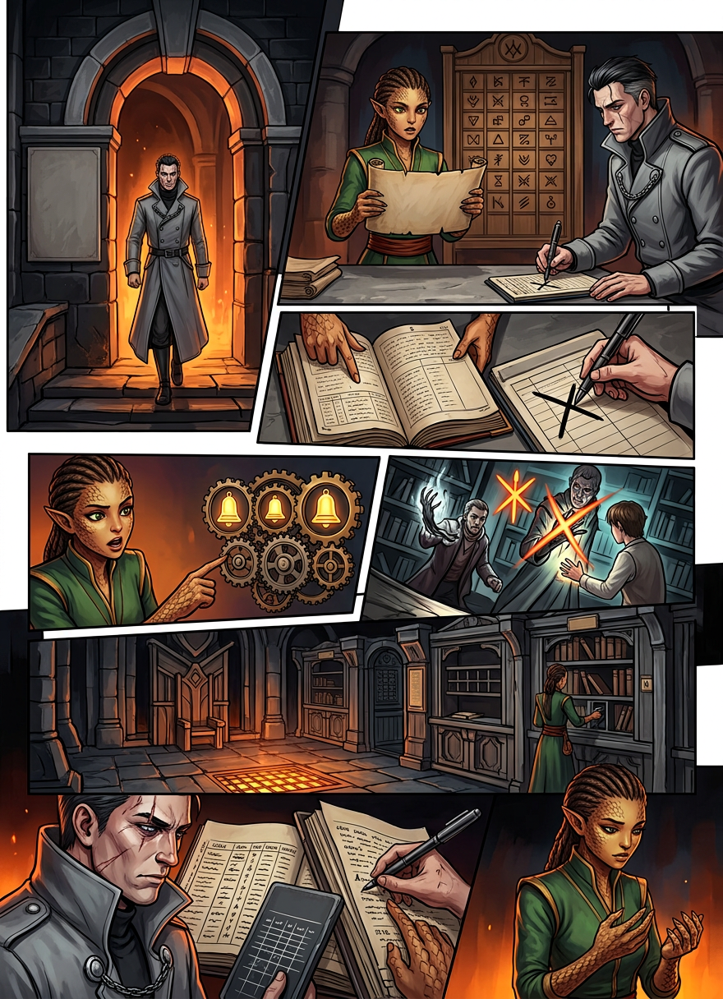
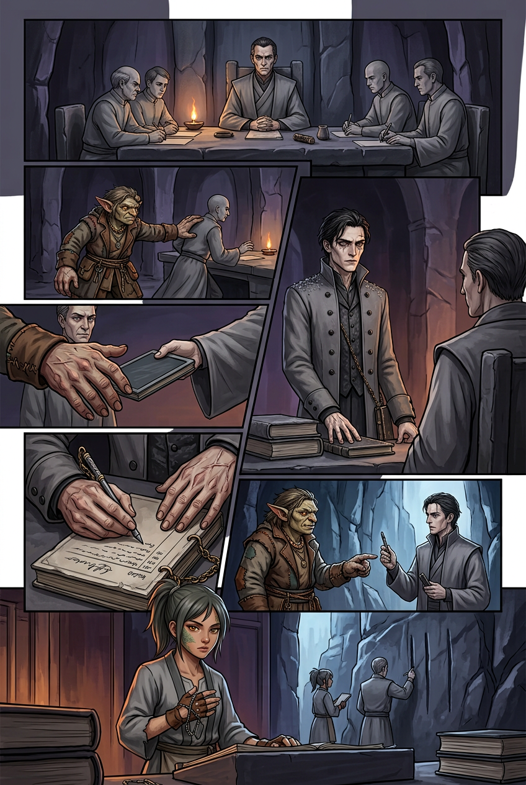
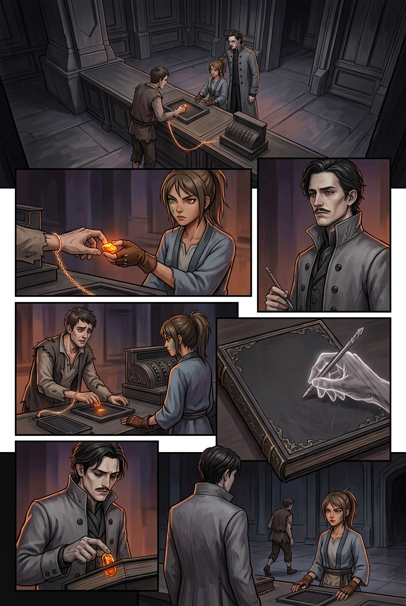
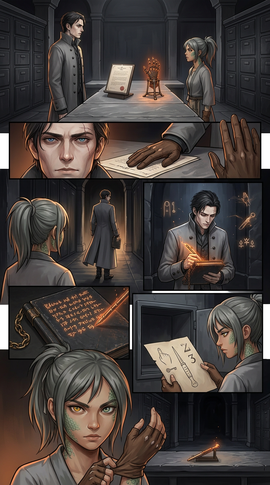
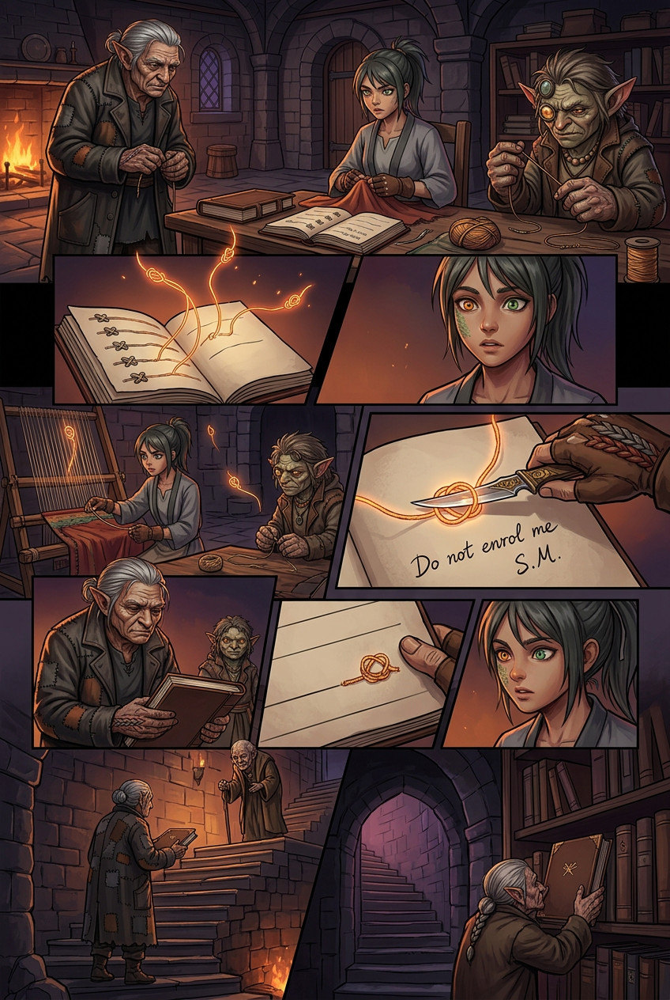
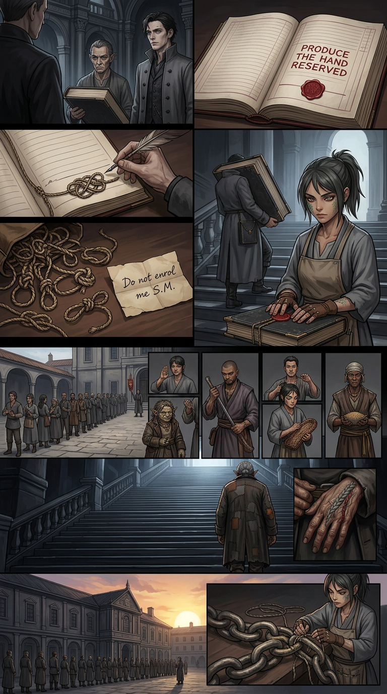

Chapter 009 — The Reading
Arc I — The Unspooling · Agnikhand · 10 pages · complete · English + Hindi. Pick a page, or read straight through.

001
002 003
003
004
005
006 007
007 008
008
009
010Chapter 009 — The Reading / पाठ — IN PROGRESS
Status: IN PROGRESS — all 10 pages scripted (EN); Hindi, cast files, images to follow in-step. Chain-stop budget: SPENT on page 006 (Rekhak, held stop — deposit writes into his own ledger). Arc: II — The Mendery · Sector: Agnikhand — the Ash-sLums, the Mendery, the Reckoning Office Open PR for this work: Kyabtao/Manga#3 Chain-stop budget: ONE — OPENED HERE. Spent on Page 006 (Rekhak, held stop). Held unspent across Chapters 006, 007 and 008; no further deferral.
Synopsis
Chapter 008 ended on a slate: a compliance chain read a braid, returned both years at once, and a clerk wrote one word — unreadable — and underlined it twice. There is no procedure for that, which means by morning there will be one.
By first bell there is one. The Office does not retaliate; it codifies. The Provisional Ordinance for Unreadable Hands does three things: an unreadable hand may not be entered in any ledger, licence, wage-book or charter; every unreadable hand must be declared and entered in a new register at the Reckoning Office; and no licensed practitioner may work a declared hand.
The count did not disappear. It moved: the Office can no longer date a braided palm, so it will count the absence of a date instead. And because the Mendery was declared third-register property in Chapter 008, the new register is kept there — Ira's own legal move comes back as the Office's counter, and the school's newest teacher is made the unpaid custodian of the instrument that indexes her own people.
Below that sits the chapter's real cost. A register of unreadable hands is worthless unless the basin's chain-readers swear it complete, and the basin has exactly one chain-reader. Rekhak is summoned and required to swear, under a held stop, that he has entered every braided hand he has ever read. Under a held stop a false word is not a tell — it is a deposit, and it writes itself into the one ledger he has never been permitted to open: his own. He takes it, for Ira, and the Office gets what it actually wanted — the only man alive who can explain what a braid does to a compliance instrument can never again be believed about it.
Meanwhile the second school opens for its one pupil, Kessa's tally-thread turns out to be the only copy of the crease-writs, and the mother is four nights down a list of forty-one.
Synopsis — page by page (as written)
- Ch. 009 · Pages 001–003 — the ordinance, the register, and the summons.
- Ch. 009 · Pages 004–006 — the certification, the objection, and the held stop. The Office buys its reader with a sentence it drafted knowing it was false; Rekhak swears it on a held stop; the deposit writes the true sentence into his own ledger in his own hand. Cliff: the keeper must identify the hand the instrument read, on the record, within three days.
- Ch. 009 · Page 007 — the blank, and the school's answer to it: kind, school-year and Jadi's first knot entered in the register with no name in the box. The Inspector calls it a translation.
- Ch. 009 · Page 008 — the queue: thirty-one hands declared voluntarily in their own language; Nandi to be heard in two days; the principal's requisition for the Book of the Hand.
- Ch. 009 · Page 009 — the knots come out of the Book and go back to their owners; the mother's note under the last knot (Do not enrol me. — S.M.); the cut Book goes up the stair with a keeper's attestation; one unnamed knot is left on the register's last line.
- Ch. 009 · Page 010 — the Office's answer is a department, not a raid: a copyist, a bigger book, and four words in crimson on the reserved line — PRODUCE THE HAND. REWARD RESERVED. Jadi volunteers to walk up the Council Stair. END OF CHAPTER NINE.
Open threads (carried in)
| Thread | From | Payoff |
|---|---|---|
| Chain-stop — MUST BE SPENT | 006–008 | Ch. 009 Page 006 |
| The Office has no procedure for unreadable | 008 p010 | Ch. 009: procedure by first bell |
| Nandi in Office custody | 008 p002 | Ch. 009+: what she will and won't say |
| Jadi has asked for the next lesson | 008 p010 | Ch. 009: the second school, one pupil |
| The mother, four nights down a list of forty-one | 008 p007 | Ch. 009+: she is visiting, and she is current |
| Clause four's timer on the licence | 008 p004 | Register kept at the Mendery extends it |
| Kessa's tally-thread — the only copy of the crease-writs | 007, 008 | Ch. 009+: the piece the Office has not noticed |
| The last page of the Book — less than a year old | 008 p003 | A pupil Ira has not met yet |